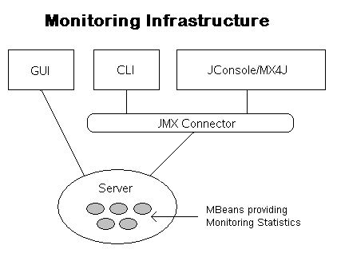

GlassFish Project - <Monitoring> home
page
New
to GlassFish | Community
Guidelines | Downloads
| FAQ
| How-Tos
Welcome to the Monitoring home page. This page is
dedicated to
discussing the monitoring features in GlassFish. The
source code is part of the cvs repository.
The user community of Glassfish (for example, application developers, administrators etc.) is interested in viewing the runtime state of various runtime components of the application server. The information on the state of runtime components (and processes) is used to identify performance bottlenecks and tuning the system for optimal performance, to aid capacity planning, to predict failures, to do root cause analysis in case of failures and sometimes to just ensure that everything is functioning as expected.
Monitoring overall system health is of fundamental importance to understand the health of every system involved that includes Web servers, application servers, databases, back-end systems, and any other systems critical to running your Web site.
|
The majority of the GlassFish code is available under the Common Development and Distribution License (CDDL) v1.0 The following page contains details about the components in GlassFish and the licenses under which they are covered. |
A user can monitor various components of GlassFish using JMX which is the primary interface to monitor runtime state. A Stats Provider MBean is registered for each of the Stats implementations and the statistics that are part of the Stats implementation are mapped to the attributes of the MBean through introspection. The system contains many Stats Provider MBeans. These MBeans may map to fine grained resources, like a method in a ejb, servlet in an application or to more coarse grained resources like the entire connection pool or transaction service. The common characteristic of these MBeans is that they all expose statistics collected at runtime as attributes, and can therefore be queried from JMX clients. The statistics themselves are rich objects like CountStatistic, BoundedRangeStatistic (as defined in JSR 77 specification). The monitoring MBeans can be accessed locally in the same JVM or from external JVMs using a JMX connector(JSR 160).

Figure 1: Monitoring Infrastructure Diagram
The monitoring code is in admin/monitor
and admin-core/monitor
packages.
List the tests which are required to be run before a commit.
Per commit procedures the Quicklook tests
are required for all areas. Some technologies have additional
tests and those should be listed here.
Include instructions on how to run the tests. For an example see the webtier page.
Specifications:
General Information :
{kind=link}
{kind=link}